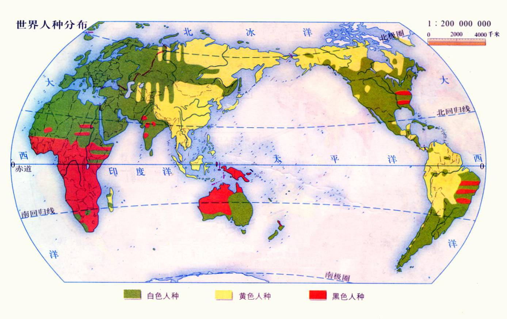
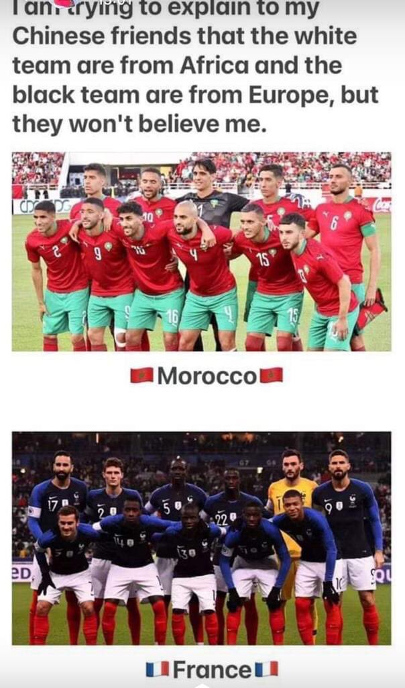
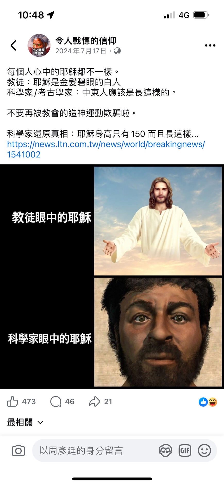
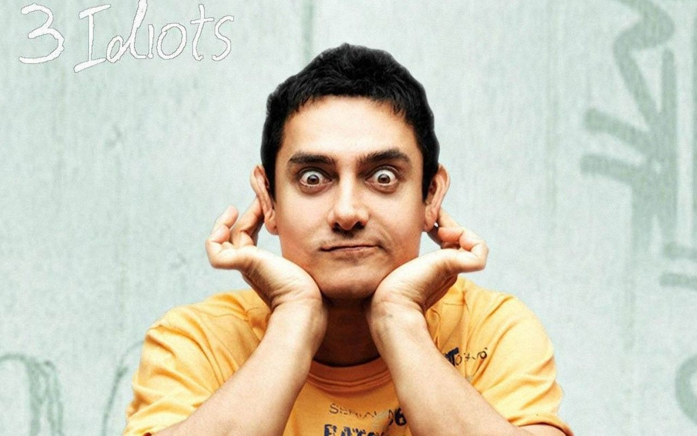
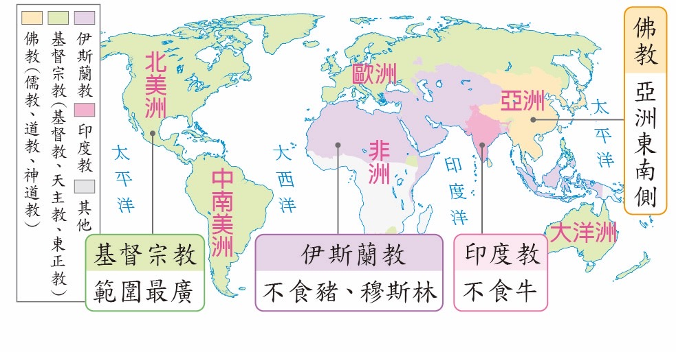

點擊上方的語言選單以切換語言
非歐裔白色人種的地理演化、生存適應與文化視覺誤區
隨便點選下方一個主題便能快速跳到該主題的說明區

在現代大眾的認知中，「白人」一詞往往與生活在歐洲大陸的高加索人及其海外後裔（如歐裔美國人、歐裔加拿大人、歐裔澳大利亞人、歐裔紐西蘭人等）緊密相連。然而，透過世界人種分布圖（如上插圖）可以觀察到，被標記為「綠色區塊」的白色人種（高加索人種），其地理範圍其實遠遠超出了歐洲的邊界，廣泛分布於北非、西亞、中亞、南亞，甚至中國大陸的西北地區。理解這些族群的演化歷史，有助於我們更精準地審視世界局勢與影視文化。
這段來自《World Genetics》的影片探討了澳洲的人種構成，並稱其為「歐洲以外最白的國家」。然而，從生理人類學的角度來看，該標題存在明顯的定義偏誤：影片將 "White"（白色人種）與 "European"（歐洲後裔）混為一談。
事實上，廣泛分佈於北非、西亞、南亞、中亞，以及中國大陸的溪北地區的高加索族群（即地圖中的綠色區塊），在生物分類上皆屬於白色人種，且其原生純度與環境適應力遠高於澳洲的移民後裔。
結論：該影片數據僅代表「歐洲裔（European）」的分佈，而非生物學上的「白色人種（Caucasians）」。
為什麼摩洛哥（非洲國家）的足球代表隊（如下插圖）看起來像歐洲人？這背後是撒哈拉沙漠這一強大地理屏障的結果。這座世界最大的沙漠有效地阻隔了南方「紅色區塊」（黑色人種）的向北擴散，使得北非地中海沿岸在數千年間與歐洲、西亞保持著頻繁的血緣流動。

在摩洛哥的阿特拉斯山脈中，居住著歷史悠久的柏柏爾人（Berbers）。儘管身處非洲，他們卻擁有典型的高加索人種特徵。在一些特定族群中，甚至能觀察到金髮、紅髮與藍色瞳孔，這證明了白色人種在非歐洲地區的古老根源。他們與南歐的拉丁民族在視覺上極其相似，反映了地中海兩岸本是一體的遺傳邏輯。
西亞地區（中東）是白色人種的重要發源地之一。聖經故事中的角色，如耶穌（Jesus），在生物學分類上毫無疑問屬於白色人種。雖然隨著政治正確的浪潮，常有人宣稱「耶穌不是白人」，但更精確的說法應該是：「耶穌不是北歐形象的白人」，他是一位典型的西亞高加索人種，擁有橄欖色皮膚與深色捲髮。
這種「西亞即高加索」的邏輯，其實在台灣的日常生活中隨處可見。如果你走進台北或各大城市的土耳其餐廳，常會發現老闆擁有深邃眼窩、高挺鼻樑與窄臉特徵，視覺質感與歐洲人極其相似。
【視覺除錯筆記：土耳其老闆與神力女超人】
※ 註：當你在台灣吃著土耳其料理時，你其實正在近距離觀察一種跨越國界、基於地理演化的高加索生理數據。
人類的肉體是極其脆弱的。白色人種的皮膚因為黑色素含量較少，在強紫外線的熱帶環境中顯得尤為易損。這也解釋了為什麼北非與西亞的白人雖然與北歐白人同源，但在視覺上卻有顯著差異。
為了適應撒哈拉與阿拉伯沙漠的酷熱，這裡的高加索族群演化出了更具保護性的橄欖色或深米色皮膚。此外，他們發展出了科學的服飾防禦系統——寬鬆且能遮蔽全身的伊斯蘭長袍（Thobe/Abaya）。這套服飾不僅是文化象徵，更是保護「脆弱肉體」免受熱風、黃沙與輻射傷害的物理盔甲。
好萊塢過去常因在《埃及眾神》等片中起用白人演員而遭受批評。若從地理人種學看，找白人飾演埃及神並無邏輯錯誤，因為埃及本就位於白色人種分布區。
換句話說，真正的違和感來自於「地緣質感的錯位」——真正具備說服力的角色設計，應對應其地理座標的演化結果：
關於「耶穌不是白人」的爭議，本質上是對「過度歐洲化」藝術形象的反彈。事實上，耶穌（Jesus）出生於西亞，在生物分類上屬於高加索人種，但他擁有的是深色捲髮與橄欖色皮膚。

Rami Malek（雷米·馬利克） 的選角便是極佳的現代對照。作為埃及裔（科普特人後裔），他在《暮光之城》中飾演埃及家族成員班傑明。他那種在強日照環境下演化出的立體五官與生理質感，完美契合了「綠色區塊」南緣的歷史真實感，避開了粉白膚色演員飾演沙漠文明的突兀感。
Graham Greene 飾演長老 Harry Clearwater 是極其成功的案例。他擁有黃色人種特有的蒙古褶（內眥贅皮）與平緩眉骨，完美契合美洲原住民的地緣背景。相比之下，劇中其他部分狼人成員（由白人演員飾演並刻意曬黑，例如Jacob、Paul等）則產生了強烈的違和感：
除了 Graham Greene，飾演 Billy Black 的 Gil Birmingham（卡曼契族）是另一個視覺標竿。他那寬闊的顴骨與深穩的地緣質感，再次證明了唯有真實的生理特徵，才能與美洲土地的歷史感產生共鳴，這與片中其他『人造膚色』的高加索演員形成了強烈對比。
在人種分布圖的綠色區塊東緣，南亞地區（如印度、巴基斯坦）展現了另一種極具教育意義的演化樣貌。雖然在許多人的視覺印象中，南亞人的膚色較深，但從骨骼特徵與解剖學來看，北印度的許多族群在分類上仍屬於廣義的高加索人種（白色人種）。
觀察經典電影《三個傻瓜》（3 Idiots）中的人物：藍丘、蘇哈斯、佩雅、拉朱。只要觀眾暫時忽略其文化背景與語言，會驚訝地發現：

這再次印證了人種（骨架結構）與膚色（環境適應）是兩套獨立的生理機制。這也解釋了為什麼在某些寶萊塢影星身上，我們能看到與歐洲人幾乎一致的五官比例與立體度。
【深度考據】 飾演「標籤男」蘇哈斯的演員 Olivier Lafont 其實是法裔歐洲人。他擁有純粹的歐洲骨架與膚色，卻能無縫嵌入印度社會而不產生視覺違和感，這從反向證明了南亞高加索支系與歐洲支系在解剖學上的高度統一性。
中亞（Central Asia）是地圖上綠色區塊與黃色區塊碰撞最激烈的地帶。這裡的國家（哈薩克、烏茲別克、吉爾吉斯、土庫曼、塔吉克）記錄了人類演化史上最複雜的「質感融合」，是連接西亞與東亞的關鍵橋樑。
中亞各國的族群呈現出一種從「純粹高加索」到「歐亞混合」的連續光譜，其生理標記與地理環境高度相關：
【地理觀察】 中亞各族群普遍擁有「環境護甲」——深色頭髮與適應乾旱氣候的橄欖色或古銅色皮膚。這解釋了為什麼當我們看向中國西北時，會發現那種「既像歐洲又像亞洲」的生理質感。
在人種分布圖的綠色區塊最東緣，高加索支系越過了帕米爾高原與歐亞草原，進入了中國西北地區。這不僅是地理上的絲路，更是遺傳學上的「東進極限」。這裡的族群組成，精準地記錄了高加索支系從不同路徑進入東亞腹地的歷史。
在新疆塔什庫爾干等地，我們能看見最純粹的高加索特徵：深邃眼窩、高鼻樑，甚至高頻率出現的天然淺色瞳孔與金髮。即便在東亞的文化語境下，他們的骨骼結構依然誠實地記錄了其屬於「綠色區塊」的歷史淵源。
除了絲路南線，中國北方的俄羅斯族與塔塔爾族則代表了高加索支系由北向南、橫跨歐亞草原的擴散。他們的存在進一步打破了國界對「白人」定義的束縛。
這證明了：高加索種並非歐洲的專利，從地中海到塔里木盆地，這是一條連續的、因應地理環境而微調膚色護甲的生理長征。
空間規模等效性
中國大陸 ≅ 全歐洲面積
大眾常將「歐洲」視為多元集合體，卻將「中國」簡化為單一標籤。透過 Scaling Logic（比例縮放邏輯） 結合 Geographic Continuity（地理連續性） 進行除錯：
這三部影片精確捕捉了當代教育系統在處理「地理座標」與「生理特徵」映射時的嚴重 Bug：
受測者因「西亞屬於亞洲」而強制套用黃種人標籤，忽視了該區原生的高加索生理硬體。
影片中學生對「印度人=白種人」的強烈震撼，暴露了將「白人」誤解為單一膚色的認知錯誤。
博主因具備高加索硬體而被判定「不像中國人」。當她展示身分證上的「民族：塔塔爾」時，引發強烈認知衝突。
在大眾的認知 Bug 中，常將「國界」當成阻斷生理特徵的防火牆。以下是我們從教育體系中診斷出的邏輯斷層：
哈薩克國土跨越歐亞兩洲，是歐洲高加索基因流入中國西北的關鍵中繼站。這種 「地理連續性（Geographic Continuity）」 決定了人種分布是漸變的光譜，而非跳躍的區塊。
參考常見教材（如翰林雲端學院的世界宗教圖），西亞至中亞被統標為「伊斯蘭教區」。大眾記住了「不食豬肉」的標籤，卻忽略了：

結論：教育體系過度側重「文化行為標籤（如宗教）」，卻遺漏了「生理演化數據」。當我們把『國家』變數移除，換上『地理比例尺』，哈薩克與中國西北白人的存在就變得極其自然。
💡 考據總結： 哈薩克的地理位置與中國巨大的空間規模，共同支持了「非歐裔白人」的合理性。與其被教科書的粗糙標籤束縛，不如透過這些「認知崩潰」影片進行系統重啟，直視全球生理分布的真實代碼。
透過對非歐裔白人的深入考據，我們發現「白色人種」的定義遠比主流媒體所呈現的更為廣闊且充滿韌性。從撒哈拉邊緣的柏柏爾人、西亞的真實耶穌形象、南亞的《三個傻瓜》，到中亞樞紐的塔吉克族，乃至中國西北的俄羅斯族與塔塔爾族，這條貫穿歐亞非的「綠色區塊」證明了：人種的本質隱藏在骨架與遺傳邏輯中，而膚色僅僅是為了保護脆弱肉體而產生的環境適應。
同時，透過對《暮光之城》與當代遺傳影片的解構，我們看見了當「生理質感」脫離「地理座標」時產生的視覺違和感——無論是標榜為最「白」卻因紫外線而生理失能的澳洲演員，還是強行裝飾的文化標籤。理解這些遺傳標記，不僅是為了打破「白人 = 歐洲人」的刻板印象，更是為了讓我們擁有一雙能穿透術語誤區、文化與外在「護甲」，直視人類演化真實歷史的眼睛。
地圖上的國界或許是人造的，但血緣與地理的共鳴，早已深刻地刻劃在每一副不朽或脆弱的肉體之中。